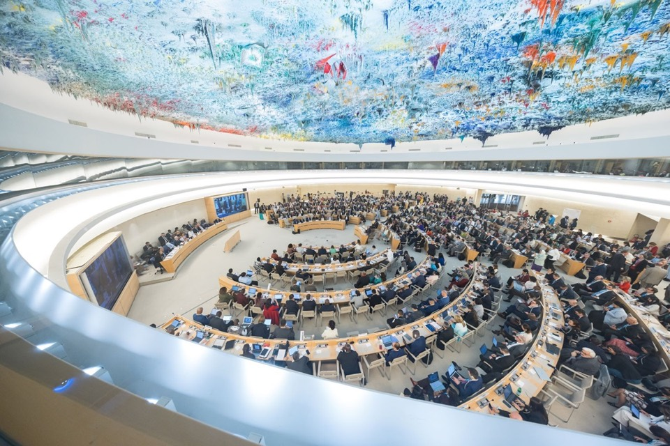

WHO Pandemic Agreement · PABS Annex
Bringing the PABS Annex to life: a simulation tool for the negotiations
How the proposed terms would work in a future pandemic, simulated to serve the negotiations. Proposal for a working prototype.
Member States approve the WHO Pandemic Agreement in Committee A, Geneva, 19 May 2025. Photo © WHO / Pierre Albouy
“It always seems impossible until it’s done.”
Attributed to Nelson Mandela
Photo: Johannesburg, 13 May 2008, South Africa The Good News, CC BY 2.0
Eighteen months of talks, and the red lines have barely moved
May 2025
Agreement adopted
WHA78.1. Article 12 defers PABS to an annex
Jul 2025 – Sep 2026
IGWG-1 to IGWG-8
Almost nothing in the on-screen text marked as agreed
May 2026
WHA79 extends
Mandate now includes legally binding contracts
2–13 Nov 2026
IGWG-9
Next formal session
23–30 May 2027
WHA80
Deadline for the annex
Without the annex, the Pandemic Agreement cannot open for signature. The whole treaty waits on it.
Sources: WHA78.1; A79/8 (13 May 2026); A/IGWG/8/4 (25 Sep 2026); A/IGWG/7/3 Rev.1
One bargain blocks the annex: is access to pathogens linked to benefits?
Group for Equity · Africa Group · Pakistan
“We cannot accept, under any configuration, an approach that delinks access from benefit sharing”
Indonesia, for the Group for Equity · TWN, 13 Jul 2026
“binding benefit-sharing commitments at the point of use”
Algeria, for the Africa Group · HPW, 17 Jul 2026
EU · Switzerland · IFPMA
“This transactional approach seems to us very unsuited to get to good results”
EU negotiator · HPW, 11 Sep 2026
“linking access to financial obligations, risks creating barriers to rapid sharing”
IFPMA statement, IGWG-6, 23 Mar 2026
Neither side can see what its own position would deliver in an outbreak. Positions are argued in the abstract.
The tool: test a whole package, see what it delivers

1 · Build
A position on each of seven key issues, with your own wording
2 · Verdict
Could the Parties sign it? Who blocks, and why
3 · Consequences
Doses to WHO, money, manufacturer uptake, in four outbreak scenarios
4 · Trades
The swaps that bring every Party over the line
MVP live: see the simulation tool (link on the front page). Base text: draft annex, on-screen text of 30 April 2026 (A79/8)
Packages, not clauses: seven issues decide the annex
| Key issue | Equity · Africa · Pakistan | EU · Switzerland · IFPMA | Term sheet bridge |
|---|---|---|---|
| 1. Access–benefit link | Contract before access | No link at access | Contract before use, enforced at EUL |
| 2. Sequence access | Registered users only | Open, anonymous | Registration, no gate |
| 3. Who signs contracts | All users, annexed now | Willing manufacturers | Tiered contracts, annexed now |
| 4. Money | Mandatory, revenue-linked | Cost recovery only | Fee + revenue % above a threshold |
| 5. PHEIC set-aside | 20%, of which 8–10% free | No fixed figure | Floor, in-scope pathogens only |
| 6. Licensing | Mandatory, royalty-free | Voluntary only | Standby licences on shortfall |
| 7. National ABS laws | Fallback to national law | PABS displaces them | Fallback after a COP finding |
Positions from A79/8, EU input (17 Oct 2025), IFPMA statements and IGWG-7/8 reporting. Bridge terms are proposals, not any bloc’s position.
Both extremes fail; the bridge is signable and delivers the most doses
| Package | Signable? | Blocked by | Doses to WHO |
|---|---|---|---|
| EU / pharma minimal | No | Equity, Africa (veto) | 347M |
| Equity maximal | No | EU, G6 (veto) | 65M |
| EU hybrid model | No | Equity, Africa (veto on linkage) | 982M |
| Africa Plus federated | No | G6 (veto), EU | 397M |
| Term sheet bridge | Yes | None; lowest Party at 53/100 | 1.0B |
Maximal terms push manufacturers out of an opt-in system: 2% sign, so fewer doses arrive. Pure voluntarism leaves the system nearly empty.
COVID-type scenario (≈13B doses over two years). Illustrative model, not validated; bloc coding is a first pass for coordinators to correct.
Built for what delegations worry about
Anonymous
No account, no login, no country field
Nothing leaves the browser
No server calls, no logging, no analytics
No attribution
Packages carry no country name
Closed text stays home
Each delegation loads its own copy, never pooled
Testing is not committing
A package tested here has no standing
Same engine for all
Every assumption visible; each bloc sets its own weights
One limit we state openly: the service hosting the link can see that it was opened, and by which signed-in account.
The prototype: the live text in, a verdict out, inside each delegation’s own workspace
One delegation’s private workspace · nothing pooled
Current text
The delegation uploads its own copy of the on-screen text
Text agent
Splits it into issues and brackets; reads new wording; cites the paragraph
Package model
Participation, doses, money, bloc acceptance and vetoes
Outputs
Verdict, comparison, trades, a brief for capital
Built on a static web app (the MVP) plus a Claude Managed Agent for reading text, one isolated session per delegation, hosted by a neutral institution with clear data-residency terms.
From MVP to WHA80 in four steps
Now · IGWG-9
MVP in coordinators’ hands
3–5 bloc coordinators test it in the margins of 2–13 Nov and correct the bloc coding
By ~30 Nov 2026
Working prototype
Private text upload, agent reading of new wording, sourced scenario data, security review
For IGWG-10
Validated version
Calibrated on H1N1 2009, PIP, COVID-19 and mpox; cross-bloc review panel; six UN languages
23–30 May 2027
WHA80
Support through adoption; hand-over for the first Conference of the Parties
IGWG-10 timing to confirm: expected February 2027; the IGWG-7 timeline (A/IGWG/7/3 Rev.1) lists 15–19 March 2027. A special WHA in the week of 14 Dec 2026 is possible, not confirmed.
A small team, funded in phases
| Phase | Length | Estimate (US$) |
|---|---|---|
| 1 · Working prototype | to ~30 Nov 2026 | 70k–120k |
| 2 · Validated version | Dec 2026 – IGWG-10 | 250k–400k |
| 3 · Support to WHA80 | to May 2027 | 100k–150k |
| Total | ~7 months | 420k–670k |
Team
- Product and policy lead
- Full-stack engineer
- Health economist / modeller
- Treaty-law adviser, part-time
- Review panel balanced across blocs
Planning estimates, to be confirmed with quotes. Staff is most of the cost; agent runs and hosting are small next to it.
Neutral by governance, not just by design
Governance
- A neutral host institution
- A review panel drawn from every bloc
- Method, data and weights published
- Funded by no party to the negotiation
| Risk | Response |
|---|---|
| Live text is closed-session | Each delegation loads its own copy privately |
| Numbers attacked | Ranges, calibration, cross-bloc review |
| Seen as one side’s tool | Same test for every bloc; open weights |
| Nobody uses it | Start with coordinators; brief the Bureau |
| Time runs out | Phase gates; each step useful alone |
What we need before IGWG-9
1
Phase 1 funding
US$70k–120k (estimate) from a funder outside the negotiation
2
Three to five coordinators
From the Group for Equity, Africa Group, EU and G6, to test it at IGWG-9
3
A neutral host
An institution trusted across blocs to run the prototype
“It always seems impossible until it’s done.” Attributed to Nelson Mandela
Contact: [name, email]